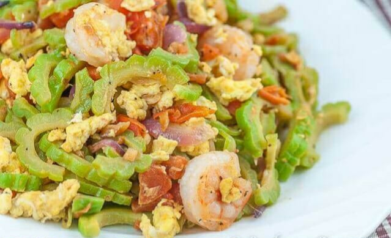

Ingredients & Method
- 2 pieces ampalaya, sliced
- 2 eggs, beaten
- 1 onion, sliced
- 2 cloves garlic, minced
- 2 tbsp oil
- Salt and pepper to taste
- Heat oil in a pan, sauté garlic and onion.
- Add ampalaya and cook until slightly tender.
- Pour beaten eggs, season with salt and pepper.
- Stir gently and cook until eggs are set.
